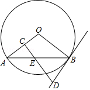
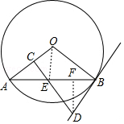

2017年北京市中考数学试题 · 数学解答题 第24题 · 对应解析
24．（5分）（2017•北京）如图，AB是⊙O的一条弦，E是AB的中点，过点E作EC⊥OA于点C，过点B作⊙O的切线交CE的延长线于点D．
（1）求证：DB=DE；
（2）若AB=12，BD=5，求⊙O的半径．

【考点】MC：切线的性质；KQ：勾股定理；M2：垂径定理．菁优网版权所有
【分析】（1）欲证明DB=DE，只要证明∠DEB=∠DBE；
（2）作DF⊥AB于F，连接OE．只要证明∠AOE=∠DEF，可得sin∠DEF=sin∠AOE= = ，由此求出AE即可解决问题．
【解答】（1）证明：∵AO=OB，
∴∠OAB=∠OBA，
∵BD是切线，
∴OB⊥BD，
∴∠OBD=90°，
∴∠OBE+∠EBD=90°，
∵EC⊥OA，
∴∠CAE+∠CEA=90°，
∵∠CEA=∠DEB，
∴∠EBD=∠BED，
∴DB=DE．
（2）作DF⊥AB于F，连接OE．
∵DB=DE，AE=EB=6，
∴EF= BE=3，OE⊥AB，
在Rt△EDF中，DE=BD=5，EF=3，
∴DF= =4，
∵∠AOE+∠A=90°，∠DEF+∠A=90°，
∴∠AOE=∠DEF，
∴sin∠DEF=sin∠AOE= = ，
∵AE=6，
∴AO= ．
∴⊙O的半径为 ．

【点评】本题考查切线的性质、勾股定理、垂径定理、锐角三角函数、等腰三角形的性质等知识，解题的关键是学会添加常用辅助线，灵活运用所学知识解决问题，属于中考常考题型．